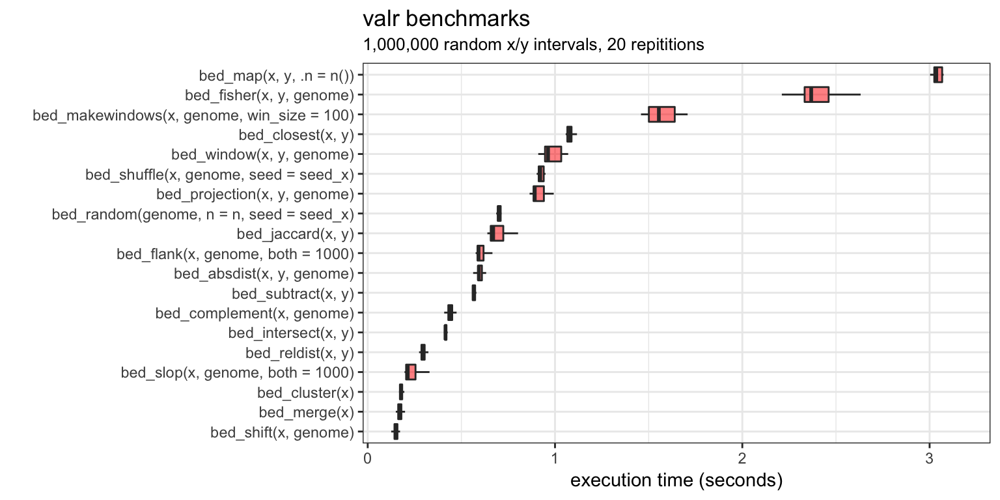

#> setting value
#> version R version 3.4.2 (2017-09-28)
#> system x86_64, darwin16.7.0
#> ui unknown
#> language (EN)
#> collate en_US.UTF-8
#> tz America/Denver
#> date 2017-10-21
#>
#> package * version date source
#> assertthat 0.2.0 2017-04-11 CRAN (R 3.4.0)
#> backports 1.1.1 2017-09-25 CRAN (R 3.4.1)
#> base * 3.4.2 2017-09-29 local
#> bindr 0.1 2016-11-13 CRAN (R 3.4.0)
#> bindrcpp * 0.2 2017-06-17 CRAN (R 3.4.0)
#> broom 0.4.2 2017-02-13 CRAN (R 3.4.0)
#> colorspace 1.3-2 2016-12-14 CRAN (R 3.4.0)
#> compiler 3.4.2 2017-09-29 local
#> datasets * 3.4.2 2017-09-29 local
#> devtools * 1.13.3 2017-08-02 CRAN (R 3.4.1)
#> digest 0.6.12 2017-01-27 CRAN (R 3.4.0)
#> dplyr * 0.7.4 2017-09-28 CRAN (R 3.4.1)
#> evaluate 0.10.1 2017-06-24 CRAN (R 3.4.0)
#> foreign 0.8-69 2017-06-22 CRAN (R 3.4.2)
#> ggplot2 * 2.2.1 2016-12-30 CRAN (R 3.4.0)
#> glue 1.1.1 2017-06-21 CRAN (R 3.4.0)
#> graphics * 3.4.2 2017-09-29 local
#> grDevices * 3.4.2 2017-09-29 local
#> grid 3.4.2 2017-09-29 local
#> gtable 0.2.0 2016-02-26 CRAN (R 3.4.0)
#> hms 0.3 2016-11-22 CRAN (R 3.4.0)
#> htmltools 0.3.6 2017-04-28 CRAN (R 3.4.0)
#> knitr 1.17 2017-08-10 CRAN (R 3.4.1)
#> labeling 0.3 2014-08-23 CRAN (R 3.4.0)
#> lattice 0.20-35 2017-03-25 CRAN (R 3.4.2)
#> lazyeval 0.2.0 2016-06-12 CRAN (R 3.4.0)
#> magrittr 1.5 2014-11-22 CRAN (R 3.4.0)
#> memoise 1.1.0 2017-04-21 CRAN (R 3.4.0)
#> methods * 3.4.2 2017-09-29 local
#> microbenchmark * 1.4-2.1 2015-11-25 CRAN (R 3.4.1)
#> mnormt 1.5-5 2016-10-15 CRAN (R 3.4.0)
#> munsell 0.4.3 2016-02-13 CRAN (R 3.4.0)
#> nlme 3.1-131 2017-02-06 CRAN (R 3.4.2)
#> parallel 3.4.2 2017-09-29 local
#> pkgconfig 2.0.1 2017-03-21 CRAN (R 3.4.0)
#> plyr 1.8.4 2016-06-08 CRAN (R 3.4.0)
#> psych 1.7.8 2017-09-09 CRAN (R 3.4.1)
#> purrr 0.2.3 2017-08-02 cran (@0.2.3)
#> R6 2.2.2 2017-06-17 CRAN (R 3.4.0)
#> Rcpp 0.12.13 2017-09-28 CRAN (R 3.4.1)
#> readr 1.1.1 2017-05-16 CRAN (R 3.4.0)
#> reshape2 1.4.2 2016-10-22 CRAN (R 3.4.0)
#> rlang 0.1.2.9000 2017-10-05 Github (tidyverse/rlang@c6b038f)
#> rmarkdown 1.6 2017-06-15 CRAN (R 3.4.0)
#> rprojroot 1.2 2017-01-16 CRAN (R 3.4.0)
#> scales * 0.5.0 2017-08-24 CRAN (R 3.4.1)
#> stats * 3.4.2 2017-09-29 local
#> stringi 1.1.5 2017-04-07 CRAN (R 3.4.0)
#> stringr 1.2.0 2017-02-18 CRAN (R 3.4.0)
#> tibble * 1.3.4 2017-08-22 cran (@1.3.4)
#> tidyr 0.7.1 2017-09-01 CRAN (R 3.4.1)
#> tools 3.4.2 2017-09-29 local
#> utils * 3.4.2 2017-09-29 local
#> valr * 0.3.1.9000 2017-10-15 local
#> withr 2.0.0 2017-07-28 CRAN (R 3.4.1)
#> yaml 2.1.14 2016-11-12 CRAN (R 3.4.0)